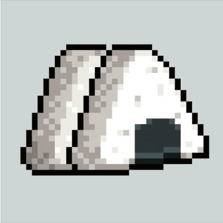

DESCRIÇÃO
Animes - Oniguiri (Onigiri ou Rice Ball)
-> é o lanche japonês mais famoso e onipresente do mundo dos animes, servindo como a comida de
conforto definitiva para heróis em viagem, estudantes e guerreiros.
Mídias populares: Pokémon, Demon Slayer, One Piece, Sailor Moon, Naruto e muitos outros.
INGREDIENTES
Para a base:
- 2 xícaras (chá) de arroz japonês (grão curto/tipo Shari)
- 2 xícaras (chá) de água
- 1 folha de alga Nori (cortada em tiras verticais de uns 3 cm)
- Sal a gosto (para passar nas mãos)
Sugestão de recheio (frango com maionese):
- 1/2 xícara de frango cozido e bem desfiado
- 2 colheres (sopa) de maionese (de preferência a japonesa Kewpie)
- 1 colher (chá) de molho de soja (shoyu)
- Alternativas: atum com maionese, salmão grelhado em lascas ou shimeji
MODO DE PREPARO
- Lavar o arroz: Lave o arroz japonês em uma tigela trocando a água de 3 a 4 vezes, esfregando os grãos delicadamente com as mãos até que a água saia quase transparente. Escorra bem.
- Cozinhar o arroz: Coloque o arroz e a água em uma panela. Tampe e leve ao fogo médio até ferver. Assim que ferver, abaixe o fogo para o mínimo e cozinhe por 15 minutos sem abrir a panela. Desligue o fogo e deixe abafado (ainda tampado) por mais 10 minutos para terminar o cozimento no vapor.
- Preparar o recheio: Enquanto o arroz descansa, misture o frango desfiado com a maionese e o shoyu em um potinho até formar uma pastinha.
- Moldar os onigiris: Molhe as mãos com um pouco de água limpa e salpique uma pitada de sal nas palmas (o sal ajuda a temperar e a conservar o arroz). Pegue uma porção de arroz ainda morno (cerca de meia xícara) e faça uma cavidade no centro.
- Rechear e fechar: Coloque uma colher de chá do recheio na cavidade. Cubra com mais um pouquinho de arroz e use as mãos para moldar o bolinho em formato de triângulo, pressionando o suficiente para o arroz grudar, mas sem esmagar os grãos.
- Finalizar: Envolva a base do triângulo com uma tira da alga Nori (o lado áspero da alga deve ficar virado para o arroz).